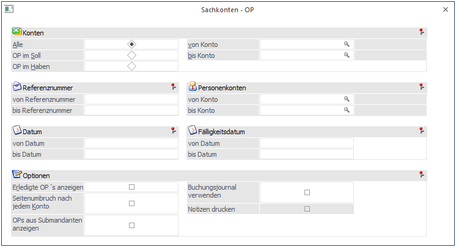
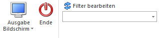
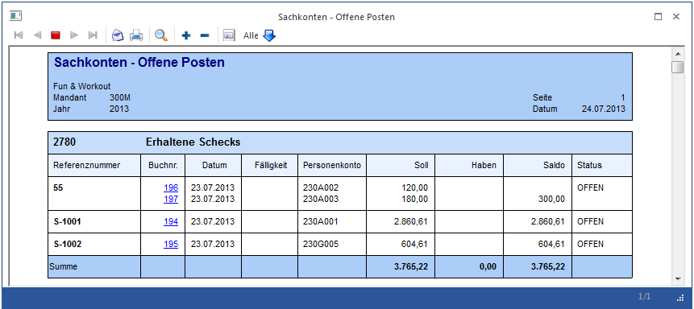

Im Menüpunkt
1 Auswertungen
1 Offene Posten
1 Sachkonten-OP
können die Konten ausgewertet werden, bei denen die Option "Sachkonten-OP" im Kontenstamm aktiviert wurde.

Einschränkungen für die Ausgabe
Ø Konten
Es kann ausgewählt werden, ob
ü alle Konten
ü die Konten mit OP-Führung im Soll
ü die Konten mit OP-Führung im Haben
ausgewertet werden soll.
Zusätzlich kann noch ein Kontenbereich von/bis eingeschränkt werden.
Ø Referenznummer
Hier kann eine Einschränkung der Referenznummer von - bis eingegeben werden.
Ø Personenkonten
Eingabe der Kontonummer von - bis. In der Auswertung werden alle Sachkonten-OPs, bei dem ein Personenkonto hinterlegt ist, ausgewiesen.
Ø Datum
Hier kann eine Einschränkung des Datums vorgenommen werden. Es werden nur die OPs angezeigt, die im ausgewählten Zeitraum erstellt oder beglichen wurden.
Ø Fälligkeitsdatum
Hier kann eine Einschränkung des Fälligkeitsdatums vorgenommen werden. Es werden nur die OPs, die im ausgewählten Zeitraum fällig sind, angezeigt.
Ø Erledigte OPs anzeigen
Wird die Checkbox "Erledigte OPs anzeigen" aktiviert, werden im Andruck nicht nur die noch offenen Sachkontenzeilen, sondern auch die bereits ausgezifferten Buchungszeilen des Kontos angezeigt.
Ø Seitenumbruch nach jedem Konto
Wird diese Checkbox aktiviert, wird jedes Konto auf eine eigene Seite gedruckt.
Ø Buchungsjournal verwenden
Ist diese Option aktiviert, stehen Ihnen für den Andruck auch alle Informationen der FIBU-Buchungszeile, aus der die Sach-OP entstanden ist, zur Verfügung.
Ø Notizen drucken
Ist diese Checkbox aktiviert, wird bei jedem Konto auch die Textinformation angedruckt, die für die Buchung im Notizfeld erfasst wurde.
Ø OPs aus Submandanten anzeigen
Ist diese Checkbox aktiviert, werden die Sachkonten-OPs des Hauptmandanten und aller Submandanten auf der Sachkonten-OP-Liste aufgelistet.
Diese Checkbox kann nur in dem Hauptmandanten aktiviert werden, in den Submandanten ist das Feld gegraut.
Buttons

Ø Ausgabe Bildschirm/Drucker
Es kann entschieden werden, ob die Ausgabe auf Bildschirm oder Drucker erfolgen soll. Mit dem Ausgabe Bildschirm/Drucker-Button oder der Taste F5 starten Sie die Auswertung.
Ø Ende-Button
Mit dem Ende-Button oder mit ESC beenden Sie das Fenster.
Ø Filter bearbeiten
Durch die Verwendung des Buttons wird der Filter-Assistent aufgerufen. In der Filterauswahl können die verschiedenen bereits gespeicherten Filter ausgewählt werden. Wenn hier ein Filter ausgewählt wird, wird automatisch nach den Kriterien des Filters selektiert.
